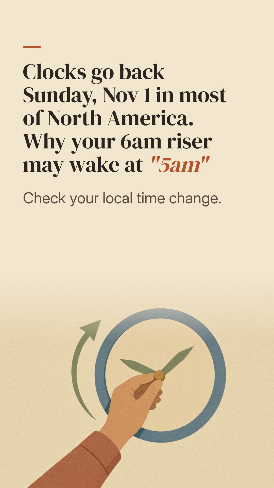
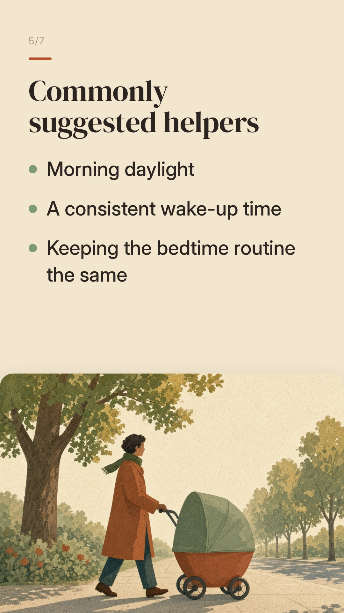
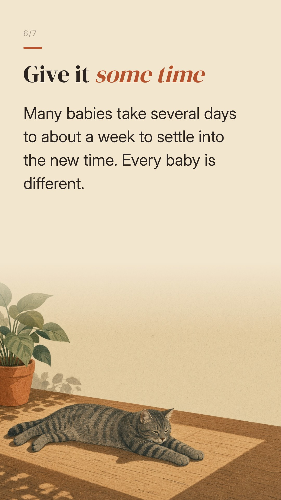

Caption
Your 6am riser may wake at 5am Sunday. If your area changes its clocks, they go back 1 hour this Sunday, Nov 1. That's most of North America, so check your local time change. There's no right way to handle it. Gradual shifting and same-day switching are both common options, and every baby adjusts at their own pace. Save this 🤍 Tracking wake times over the week can show how the shift is going: log it in one tap. Napapp, link in bio. Not medical advice. Check with your pediatrician about your baby's sleep.
#clockchange #daylightsaving #babysleep #earlyrising
Sound
TikTok picks
- Coming Up Roses · Harry StylesHopeful build for 'here's how to prepare', and the strongest cleared trend [Octohog: Cleared, Oct 29 10:04 AM ET]
- Runaway · AURORADreamy early-dark morning mood [Octohog: Cleared, Oct 29 10:04 AM ET]
- The Only Exception · ParamoreSoft-ironic reading: '5am: the only exception'. The Only Exception is fading: it dropped off Kabo's top 20 on Oct 28-29 and is #18 on Octohog. Use it this week or skip it [Octohog: Cleared, Oct 29 10:04 AM ET]
Instagram / Facebook picks
- Breaking News (Instrumental) · AltairMakinNews-jingle feel fits 'clocks go back Sunday', a playful announcement, not alarming [instrumental by an independent producer, so likely usable on a business account; #6 on Tracygram global (Oct 29)]
- Autumn Journey · Andrea VanzoCalm autumn piano that matches the season [independent piano instrumental, so likely usable on a business account; rising on CreatorDB (week of Oct 28)]
- Evergreen · Richy Mitch & the Coal MinersWarm, unhurried, reassuring option [independent folk band; it may be available on a business account; #2 on Tracygram global (Oct 29), 1.3M reels]
Notes: TikTok carousel Oct 30 8:00 AM ET; IG/FB carousel Oct 31 12:30 PM ET. Timely heads-up before the Nov 1 clock change. The Only Exception is fading: it dropped off Kabo's top 20 on Oct 28-29 and is #18 on Octohog. Backup TikTok sound: Chopin Nocturne No. 2 (Piano Mono), cleared for business and evergreen. Backup Meta sound: search the Meta Sound Collection (https://www.facebook.com/sound/collection/) in the picker for 'soft piano', 'lullaby' or 'nocturne'. Last resort: re-render with --track to use the CC0 Loyalty Freak track. Confirm every sound in the in-app picker on the business account before publishing (TikTok: Commercial Music Library; IG/FB: it shouldn't be greyed out or say 'unavailable for business'). Sounds are added in the app, and the reel.mp4 files are silent.
Picks as of Oct 29, 2026, 1:05 PM ET
Only use sounds cleared for business use: TikTok's Commercial sounds list, and on Instagram/Facebook a sound not flagged as unavailable for business accounts.
Happy with it? Go back to the calendar and tap Approve on this post.